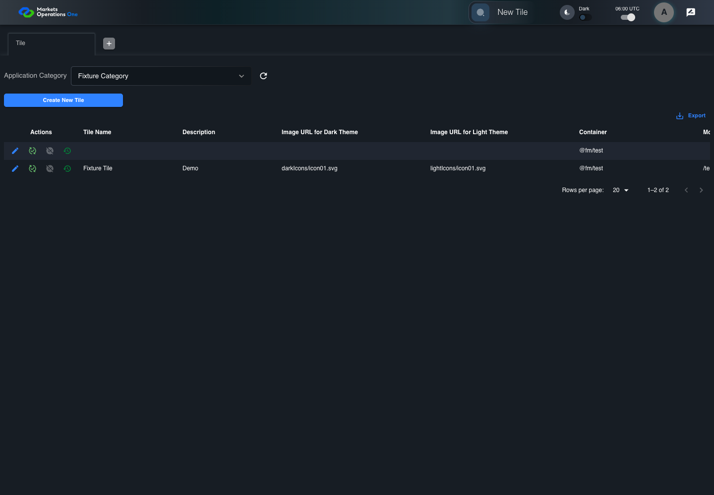

UI-ADM-SEL-009 actual administration UI with step evidence
PASS · application/run-050/ui-adm-sel-009-actual-administration-ui-with-step-evidence-873a95ce706b-attempt-1 · ACTUAL_APPLICATION_LOCAL_SERVICES
Actual current React administration screens. Controlled browser login supplies UI-ADMIN-01 and TEST_OWNER, or the declared SUPER_USER. Controlled BFF routes return the case-declared records. Other controlled saves persist submitted field values. This run establishes frontend handling only. It does not execute BFF validation, storage, audit generation, or authorization.
2026-10-22T06:00:51.555Z to 2026-10-22T06:00:56.500Z
Assertions and result · Artifact manifest · Exact run inputs and source hashes
Result SHA-256:74081eb2cbfdbde708495d7537f2a3516149b72616d3a3f362a7593e9dcad203Machine observations
- ui-origin-admin-requests.json
319908df45eb06c17cb771bc000860748a91ddfda68c73ffb0f8a7c98078cc8e
Screenshot capture: CAPTURED. Named frames: 9.
Step screenshot bindings: COMPLETE. 8/8 canonical steps have execution screenshots.
Bindings measure structural coverage only. They do not establish screenshot content quality or relevance.
Screenshot content review: NOT_REVIEWED. Recorded context: 0/9 frames. Identical image bytes: 0 repeated frames. Recorded context does not establish human visual review.
Canonical step timeline
Given Admin A is authenticated as fixture UI-ADMIN-01 with the case-specific permissions
Execution: PASSED.
1. step-01 Visible state after step 1: Given Admin A is authenticated as fixture UI-ADMIN-01 with the case-specific permissions
2026-10-22T06:00:53.088Z · 1440×1000
Step: /Users/lushevol/code/github/ratan-release-impact/workbench/tasks/ui-test-coverage-20261022/test-cases.md:9613
SHA-256:5b18e61c9d4c5c1f0cee1300bdcda34b1418a25c1a97509d35e55f2dac5d5abcAnd import map options contain @fm/test with importMapId 71; Tile create form is open
Execution: PASSED.2. step-02 Visible state after step 2: And import map options contain @fm/test with importMapId 71; Tile create form is open
2026-10-22T06:00:54.672Z · 1440×1000
Step: /Users/lushevol/code/github/ratan-release-impact/workbench/tasks/ui-test-coverage-20261022/test-cases.md:9614
SHA-256:6e81ee912ea73d8b5d94ef8bd79eb8142629f5b51639d563b6e9fea152ed9dceWhen Admin A opens combobox named "Container" inside the new-record dialog inside the "Tile" administration tabpanel
Execution: PASSED.3. step-03 Visible state after step 3: When Admin A opens combobox named "Container" inside the new-record dialog inside the "Tile" administration tabpanel
2026-10-22T06:00:54.939Z · 1440×1000
Step: /Users/lushevol/code/github/ratan-release-impact/workbench/tasks/ui-test-coverage-20261022/test-cases.md:9615
SHA-256:04c1d414871c6fa0eb24d663e0e4b31bfd5706116c68e93796f80aa11ba1d2ebAnd Admin A clicks option named "@fm/test" inside the popup for the "Container" combobox inside the new Tile dialog
Execution: PASSED.4. step-04 Visible state after step 4: And Admin A clicks option named "@fm/test" inside the popup for the "Container" combobox inside the new Tile dialog
2026-10-22T06:00:55.108Z · 1440×1000
Step: /Users/lushevol/code/github/ratan-release-impact/workbench/tasks/ui-test-coverage-20261022/test-cases.md:9616
SHA-256:58097b622e6cb6c7559a0b3c90321d72325c63e30d4ee0d40c8d9469da7d9eadAnd the declared controlled field clock advances by 300 milliseconds
Execution: PASSED.5. step-05 Visible state after step 5: And the declared controlled field clock advances by 300 milliseconds
2026-10-22T06:00:55.212Z · 1440×1000
Step: /Users/lushevol/code/github/ratan-release-impact/workbench/tasks/ui-test-coverage-20261022/test-cases.md:9617
SHA-256:5f1947ae318b08f5cc27dddd56bcbd69c5a7a66bafcf9857084d60965c346decAnd Admin A clicks button named "Create" inside the new-record dialog inside the "Tile" administration tabpanel
Execution: PASSED.6. step-06 Visible state after step 6: And Admin A clicks button named "Create" inside the new-record dialog inside the "Tile" administration tabpanel
2026-10-22T06:00:55.430Z · 1440×1000
Step: /Users/lushevol/code/github/ratan-release-impact/workbench/tasks/ui-test-coverage-20261022/test-cases.md:9618
SHA-256:1c778faeca9d16e5dfd959be52b0a432f9e5d46706d43d37ae9f0a30c5e9b38bThen cell named "Container Record Id" inside row with Record Id "102" in the "Tile" administration data grid displays "71"
Execution: PASSED.7. step-07 Visible state after step 7: Then cell named "Container Record Id" inside row with Record Id "102" in the "Tile" administration data grid displays "71"
2026-10-22T06:00:55.723Z · 1440×1000
Step: /Users/lushevol/code/github/ratan-release-impact/workbench/tasks/ui-test-coverage-20261022/test-cases.md:9619
SHA-256:0fdfd47b55e9158d40ad0cdc9aba25dccacd36c5240d1e7aae944f21f519f9feAnd cell named "Container" inside row with Record Id "102" in the "Tile" administration data grid displays "@fm/test"
Execution: PASSED.
8. step-08 Visible state after step 8: And cell named "Container" inside row with Record Id "102" in the "Tile" administration data grid displays "@fm/test"
2026-10-22T06:00:55.852Z · 1440×1000
Step: /Users/lushevol/code/github/ratan-release-impact/workbench/tasks/ui-test-coverage-20261022/test-cases.md:9620
SHA-256:d1e5be30b816ca67d4fcc0b136c60a2065794bf4ff9892eb6a3e74d2d76417e1
Additional named frames
Screenshots establish visible state only. Assertions and traces support functional claims.